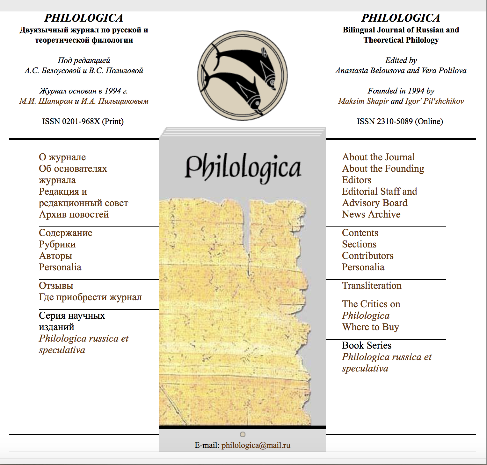

Мне 17 лет, я учусь в НИУ ВШЭ на ОП "Филология"
В мои научные интересы входят сферы изучения языков, русской и иностранной литературы и методологии
Люблю Москву и соус песто, увлекаюсь поэзией ХХ века и пытаюсь заниматься спортом (правда, пока не очень получается)
Я вечно сонная и голодная, но в общем-то счастливая
Хочу получить мягкую игрушку муми-троля на восемнадцатилетие :) p.s. забавная картинка внизу


В эпоху технологического прогресса даже такая "книжная" профессия, как филолог, нуждается в помощи компьютера. Все большую популярность набирает исследования в сфере digital humanities, открывающие новые границы литературоведческих исследований, используя при этом точные методы. Да и в обычной жизни, как и любому другому человеку, филологу необходимо правильно систематизировать информацию, которой зачастую бывает очень много. В этом и могут помочь современные технологии, всегда полезно идти в ногу со временнем :)"

Сайт двуязычного журнала по литературе оставил довольно смутное впечатление. С одной стороны, говоря о User Experience, мы можем отметить удобство интерфейса: все разделы аккуратно (или не очень) вынесены сбоку, причем сразу на двух языках, что гарнатирует точное понимание структруы и быстрый поиск информации. Но что касается внешнего вида интерфейса, то создается впечатление, что этот сайт делали такие же студенты-гуманитарии во время курса цифорой грамотности :)). Странный рисунок папируса или бересты на отлично (нет) сделанном сером фоне, не нусущий никакой (даже эстетической) нагрузки, закрывает весь ценрт сайта, а "интересная" реклама внизу ставит под вопрос репутацию данного издания...В целом - не очень.
